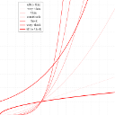
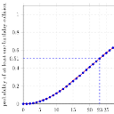
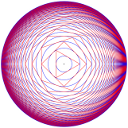

|  |
Sizes in LaTeX |
Recent Posts all posts
|  |
Plotting graphs with PGFplots (LaTeX and Tikz) |
My LaTeX Tikz Template |
|  |
Complex LaTeX visualizations (Tikz) |
How to visualize Graph algorithms with LaTeX |

|
How to draw a finite-state machine |